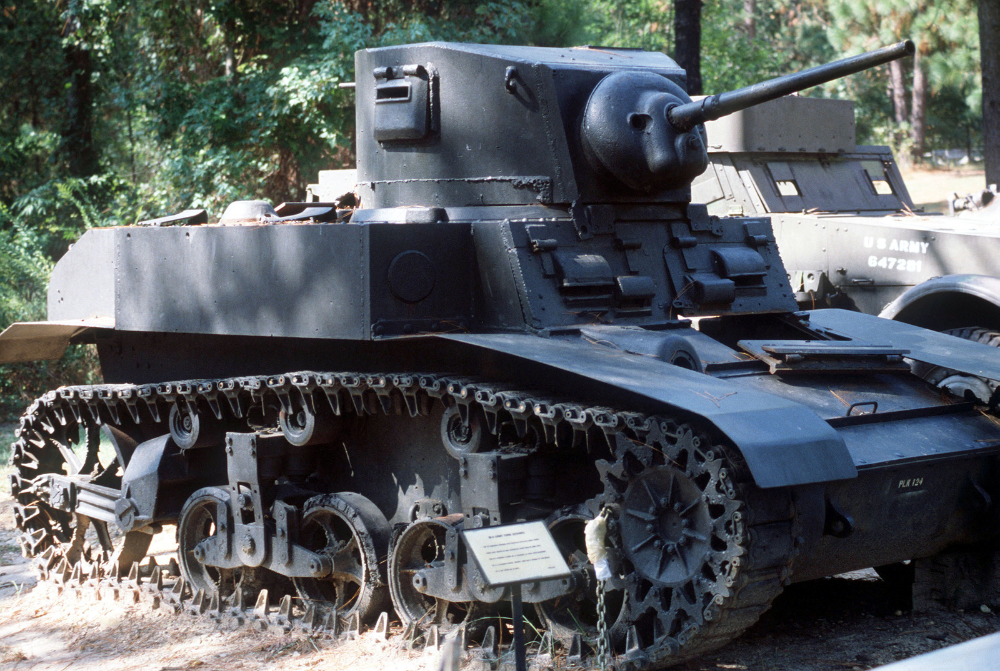

M3 Stuart
Although the US wanted to make a light tank with a 75mm gun, they realized that they needed large numbers of tanks. So instead of designing a knew tank, they made a more advanced version of the M2 light tank, The M3 Stuart. The big diggerence between the M2 and M3 is that the M3 has thicker armour in quite a few spots. The M3 Stuart came into production right after the last M2 light tank was produced. This happened in March 1941. About 500 M3s were produced. The amazing thing about the M3 light tank is that it was very speedy and a very reliable tank. M3s were supplied to Great Britain, China, New Zealand, Soviet Union, and others.
| Armament | Armor | Dimensions |
|---|---|---|
| Goes Here | Goes Here | Goes Here |
